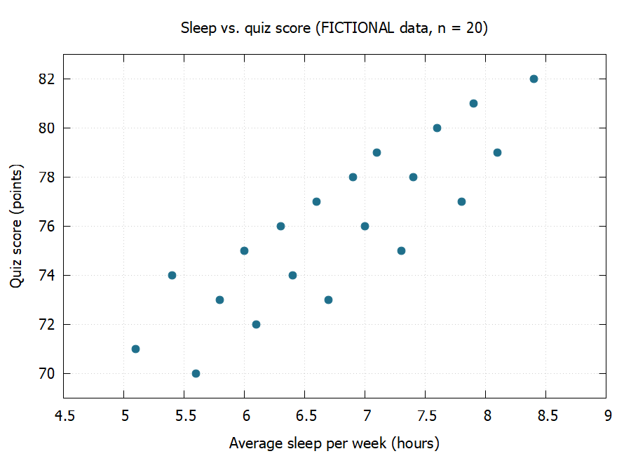

2-3 · 約 7 分
改一行，畫截斷版
用記事本打開 truncated.gp，跟 scatter.gp 比：只有標了 <-- 的兩行不一樣。一行是輸出檔名，另一行才是重點：
set yrange [0:100] ← scatter.gp set yrange [69:83] ← truncated.gp：Y 軸只畫 69 到 83 分
gnuplot truncated.gp
應該看到多出（或更新了）truncated.png。同樣 20 個點、同一個標題，這次點從左下角一路衝到右上角，看起來睡多一點、分數就高很多。
做什麼（想多玩一下）把 truncated.gp 的 [69:83] 改成 [60:90]，存檔再跑一次，看斜度怎麼變。改完記得存檔，記事本要按 Ctrl＋S。
2-4 · 約 8 分
兩張並排，寫一句話
這是老師先畫好的兩張（你自己畫的應該長得一樣）：


做什麼把你的兩張圖並排打開（Windows：兩個圖片視窗一個拖到螢幕左半、一個拖到右半），截一張圖。證據 ③
做什麼寫一句話：哪一張比較容易讓人誤會？誤會成什麼？為什麼？
應該看到（寫完自己對一下）你的句子有講到「Y 軸從哪裡開始」或「軸上的數字」。
寫完再打開：老師的想法
兩張的資料一模一樣，差別只在 Y 軸的範圍。截斷版把 12 分的差距撐滿整張圖，看起來像「睡眠決定成績」；正常版放在 0–100 分的尺度上，差距其實不大。
截斷 Y 軸不一定是作弊：想看清楚小差距時，放大是合理的，只要軸上的數字標清楚、讀的人有看。真正會騙人的是讀圖的人沒看軸。還有兩件事要記得：這份資料是虛構的；就算是真的資料，兩件事「一起出現」也不等於一件造成另一件。